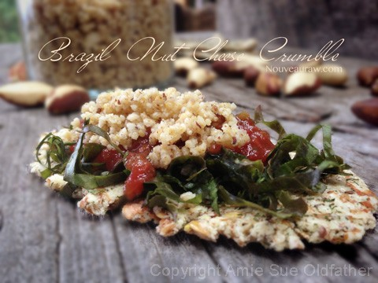

Brazil Nut Cheese Crumble
Brazil Nut “Cheese” Crumble
~ raw, vegan, gluten-free ~
Lately, I have been breathing new life into old recipes. What we enjoy about this one is that it can be used in so many ways. Sprinkled on top of your salad, your pasta dish, or used it a topping on a bruschetta.
My grandmother ran a coffee shop. There was always a pot of coffee brewing before sun-up, and she kept it full till sun-down. This cafe was in the heart of her home, the kitchen. There she kept everyone’s cup full of coffee throughout the day. The family came and went all day long as though there was a revolving door on the front porch. I am actually surprised with the houses they built, that they never put one in. :)
As a child, I always wanted to be a part of these festivities. I would squeeze a chair in between the grownups or snag someone’s knee. As they sipped their coffee, they spoke of the day’s events. All the adult talk quickly caused me to lose interest so I would entertain myself with whatever was in the center of the table.
I use to chew on grandma’s fake grapes that were in an arrangement that soon got replaced with the never-ending bowl of nuts. They were always in shells and always proved to be a great feat when I could get one open.
If you ever feel like you can’t control yourself around nuts, fearing that you will eat too many…. buy the ones in their shells. Trust me, the amount of work that it takes to open them will curb that binge. :)
I found that I didn’t care for that big, clunky looking nut… the Brazil nut. Cashews were by far my favorite because they had a hint of sweetness in them. Thankfully, in my adult years, I have grown quite fond of them. Not only do they taste good, but they also have a lot of great health benefits tucked in that little package.
Brazil nuts are high in selenium. The thyroid gland benefits from the presence of selenium, with the element helping to regulate the functions of the gland. In fact, selenium is thought to help in promoting the proper function of many organs in the body, which makes it ideal for helping to maintain healthy blood pressure and general heart health. (source)
Ingredients:
yields 1 1/2 cups
- 1 cup Brazil nuts
- 1 Tbsp nutritional yeast
- 1 tsp chopped garlic
- 1/4 tsp Himalayan pink salt
Preparation:
- Place nuts, nutritional yeast, garlic and salt in the food processor that is fitted with the “S” blade. Process until nice and fluffy.
- Store in fridge.
- This tastes fantastic on salads, on my Caramelized Onion & Wilted Veggie Cream Tart, Marinated Mushroom Green Salad, Italian Tomato Spaghetti with Noodle Squash, or my Nomato Spaghetti with Vegan Meatballs. These are just a few ideas for you! Enjoy.

© AmieSue.com